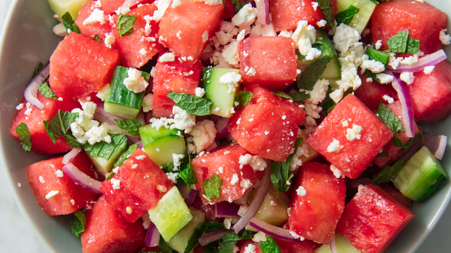

Watermelon cucumber salad OwO

The most amazing watermelon and cucumber salad!
Love dis recipe for the summertime ya dig dawg, shit goes hard af homie for real for real.
Suring the summer, I absolutely love to eat fruit, but nothing feels more perfect than some juicy and sweet watermelon in the summer's heat. It's refreshing, light and delicious, not to mention pretty healthy too! When I found out about Watermelon Cucumber Salad, it was an absolutely elevating idea. It's like the fresh taste of summer times 2. Its also easy to make and perfect for making in big batches. Try this salad out at your next cookout or summer party and tell me what you think!
Ingredients:
- 1/2 Watermelon
- 2 Cucumbers
- 1 Lime
- 1/2 tsp Salt
- 1/2 tsp Pepper
- 1/2 tsp Chili Powder
Steps:
- Chop and cube watermelon, discarding the rinds.
- Slice cucumber to desired thickness and halve.
- In a bowl combine along with salt, chili powder and pepper. Mix well.
- After mixing, squeeze the juice of two lime halves over the salad. Squeeze across salad to ensure it reaches all corners. Serve and enjoy!